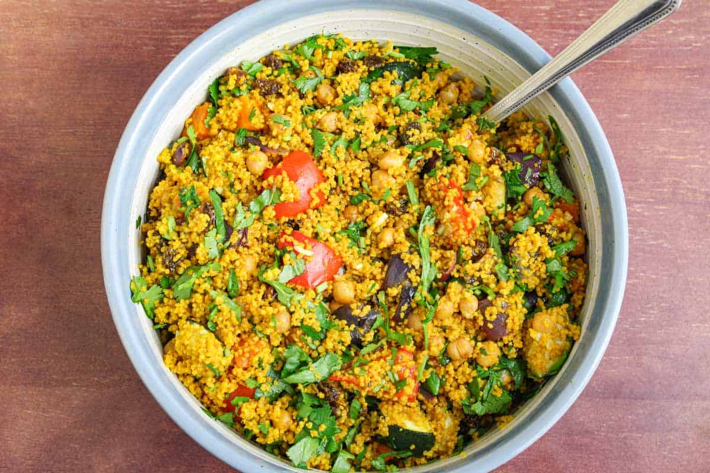

Moroccan-couscous
is a Moroccan dish of small steamed granules of rolled durum wheat semolina that is often served with a stew spooned on top. Pearl millet, sorghum, bulgur, and other cereals are sometimes cooked in a similar way in other regions.
